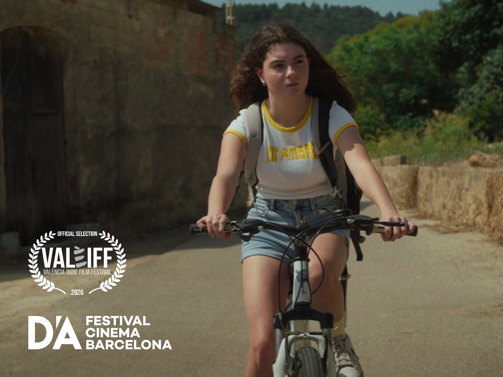
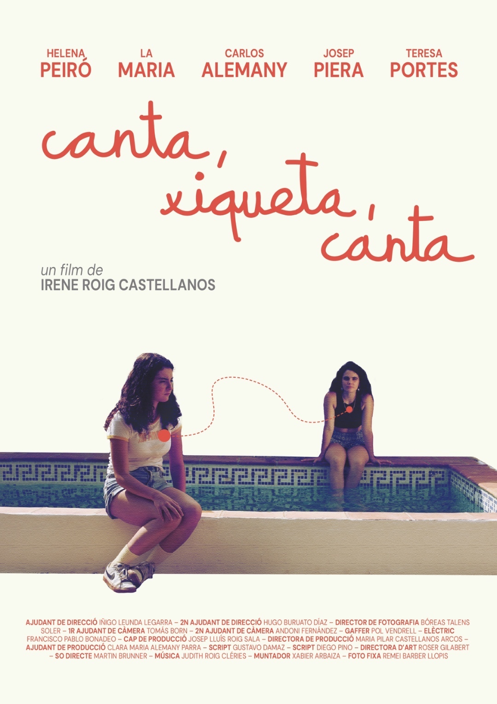

2025
Proyecto 01
Canta, xiqueta, canta
Rodado en julio de 2025 en Oliva (Valencia), en valenciano. Un retrato íntimo de una niña y su voz en un paisaje mediterráneo que parece hablar por sí solo.
- Presentado en la sesión ESCAC del D’A Film Festival Barcelona 2026
- Seleccionado en VALEIFF